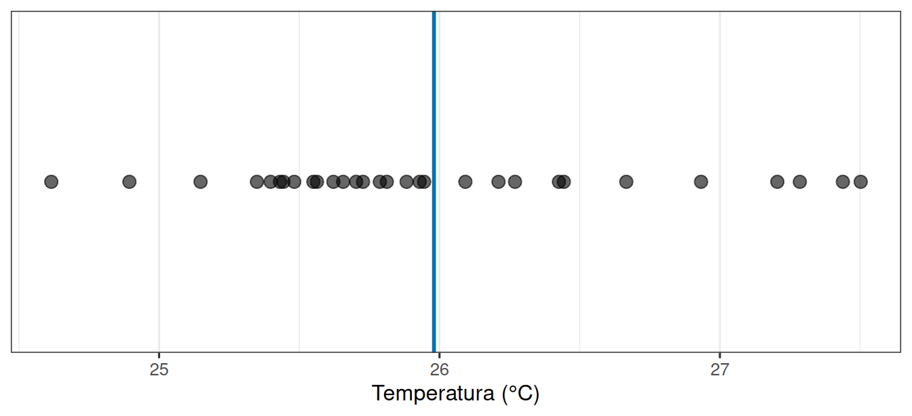

| Poça | Temperatura (°C) | Profundidade (cm) | Sombreamento |
|---|---|---|---|
| 1 | 25.4 | 12 | baixo |
| 2 | 25.9 | 8 | baixo |
| 3 | 24.8 | 20 | alto |
| 4 | 26.3 | 6 | baixo |
| 5 | 25.1 | 15 | médio |
Leitura prévia 01
Por que duas medidas nunca são iguais?
1 Duas medidas, dois números
Você desce até um costão rochoso com um termômetro e mede a temperatura da água em uma poça de maré: 25,4 °C. Um colega mede a poça ao lado: 25,9 °C. Em uma terceira poça, medimos 24,8 °C.
Três medidas, três números. Nenhum errado.
Essa é a situação mais comum em qualquer ciência que trabalha com o ambiente. Quando repetimos uma medida, quase nunca obtemos o mesmo valor. E a primeira decisão de quem analisa dados é justamente esta: o que fazer com essa diferença?
Há duas saídas ruins. A primeira é tratar a variação como defeito: “meu método está impreciso”. A segunda é ignorá-la e ficar só com a média: “a temperatura é 25,4 °C”. Nesta unidade curricular seguimos por outro caminho: a variação é informação, e boa parte do trabalho consiste em descobrir de onde ela vem.
2 De onde vem a diferença entre duas medidas?
Quando dois números diferem, pelo menos três coisas podem estar acontecendo ao mesmo tempo.
As poças são realmente diferentes. Uma recebe mais sol, outra é mais funda, outra tem mais sombra de alga. Essa é uma diferença que existe no mundo, independentemente de você medi-la.
O instrumento não é perfeito. O mesmo termômetro, na mesma poça, no mesmo instante, pode registrar 25,4 ou 25,5 °C. Essa diferença não está na poça: está na medição.
Você escolheu essas poças e não outras. Havia dezenas de poças no costão e você mediu três. Outro grupo mediria outras três e chegaria a outros números.
As três fontes se somam no valor que você anota na planilha. Separá-las não é um detalhe técnico: é o que permite dizer se um resultado significa alguma coisa.
3 O que é uma unidade amostral?
Antes de anotar qualquer número, é preciso responder: o número descreve o quê?
No exemplo, cada número descreve uma poça de maré. A poça é a unidade amostral: a coisa sobre a qual a medida é feita. Se estivéssemos pesando peixes, a unidade seria cada peixe. Se contássemos espécies em quadrados de 1 m² na praia, a unidade seria cada quadrado.
Essa escolha parece óbvia, mas é o ponto onde mais se erra. Se você mede a temperatura da mesma poça cinco vezes, você tem cinco medidas, mas continua tendo uma poça. Cinco medidas de uma poça não são a mesma coisa que uma medida de cinco poças, ainda que a planilha fique com cinco linhas nos dois casos.
4 Como isso vira uma tabela?
Uma tabela de dados organizada segue duas regras simples:
- cada linha é uma unidade amostral;
- cada coluna é uma característica medida nessa unidade.
Para as poças de maré, ficaria assim:
Cinco linhas, cinco poças. A coluna poca não é uma medida: é o identificador da unidade. As outras três colunas são características dessa unidade: duas numéricas e uma categórica.
Guardar os dados nesse formato não é preciosismo de organização. É ele que permite responder perguntas como “as poças mais fundas são mais frias?” sem reescrever nada.
5 O que a variação parece quando a vemos?
Cinco números são poucos para enxergar um padrão. Com trinta poças, a figura abaixo mostra o que costuma acontecer: os valores se espalham em torno de um centro, a maioria perto dele e poucos bem longe.

Duas coisas descrevem essa figura, e vamos usá-las o semestre inteiro:
- onde está o centro: a média das trinta medidas;
- quão espalhados estão os valores em torno desse centro.
Um resumo que informa só o centro esconde metade do que aconteceu. Dizer “a temperatura média é 25,5 °C” é verdadeiro tanto para poças que variam de 25,4 a 25,6 quanto para poças que variam de 21 a 30. São situações completamente diferentes.
6 O que queremos saber e o que conseguimos medir
Você mediu trinta poças. Mas a pergunta que interessa quase nunca é sobre essas trinta.
A pergunta costuma ser sobre todas as poças daquele costão, inclusive as que você não visitou. Esse conjunto maior, sobre o qual queremos falar, é a população. As trinta poças medidas são a amostra.
Essa distinção explica por que a variação importa tanto. Se as poças fossem todas idênticas, uma medida bastaria e não haveria incerteza nenhuma. Como elas variam, cada amostra produz uma resposta um pouco diferente, e precisamos de um jeito de dizer quanto confiar nela.